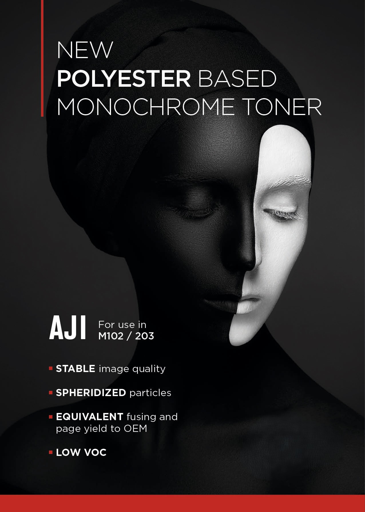
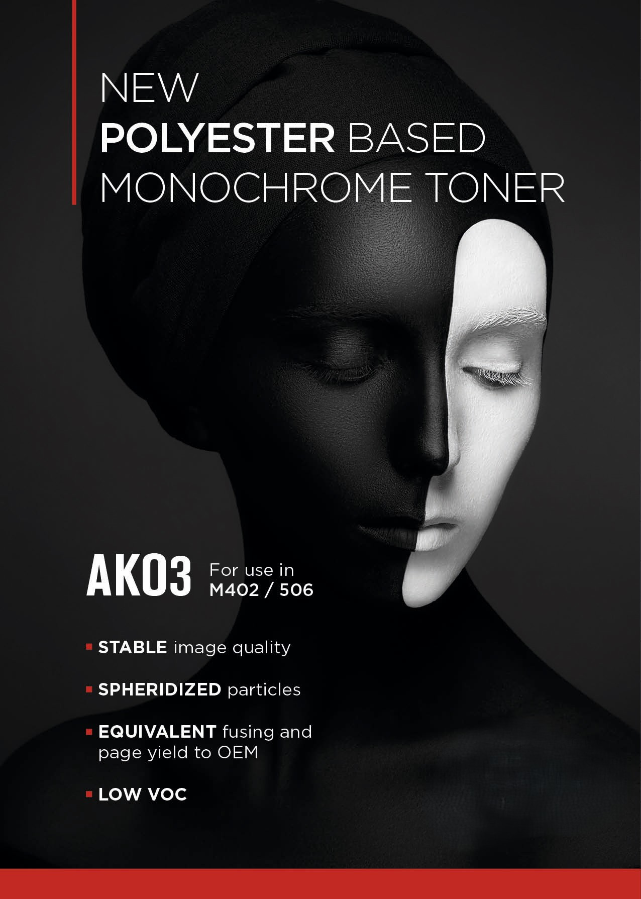
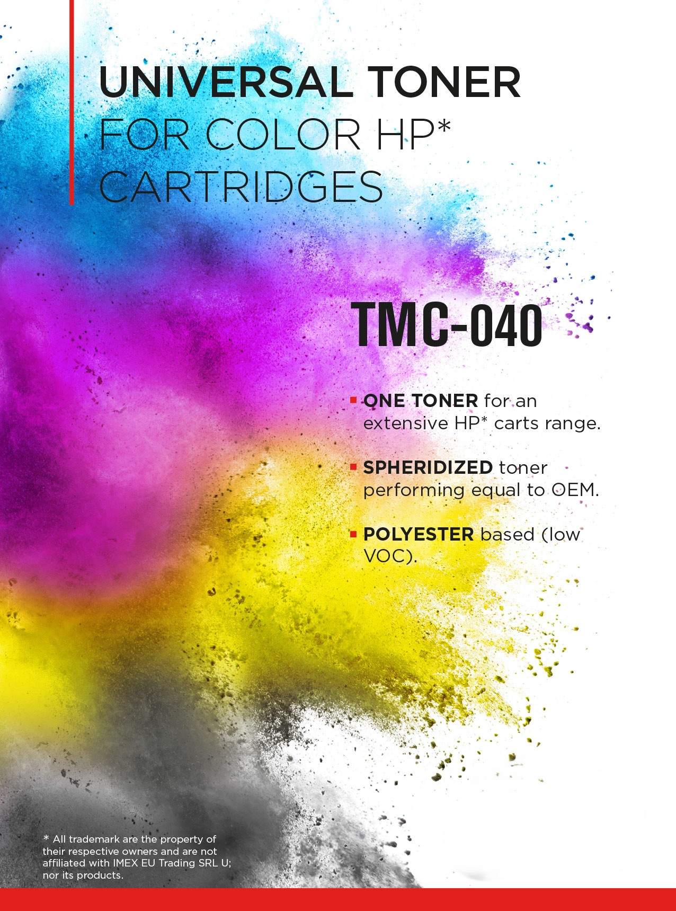
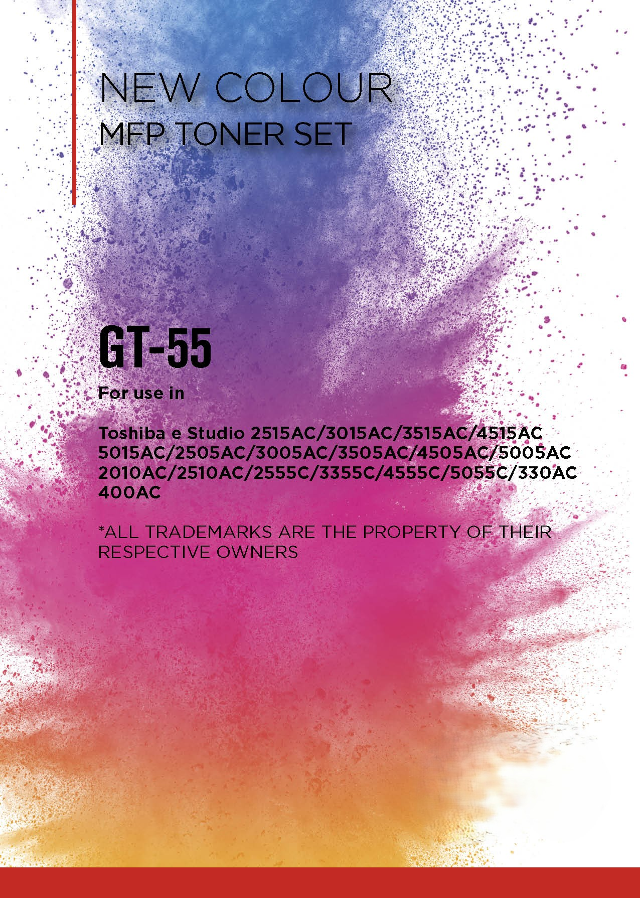

For over 40 years, Golden Toner has designed and manufactured consistent and reliable toner products that meet and exceed the expectations of key players in the aftermarket.
Every time we pursue a progressive technical opportunity, our development team in Okayama/Japan works hard to establish a unique technological approach, helping us to respond to the ever changing demands in toner technology.
Our automated production facilities in Japan and the US combined with stringent internal QA systems help to ensure a quality finished product for cartridge remanufacturers around the world.


For use in M402 / 506

High quality color reproduction

Optimized for high-speed printing
Golden Toner is one of the largest toner manufacturers in the toner cartridge recycling industry. For over 35 years, Golden Toner has continually contributed to the industry by supplying high quality, consistent and reliable toner products matching the requirements of the leading players and users.
Golden Toner is continually committed to meet the ever changing requirements of the recycling industry by bringing smart colour technology to our door step.